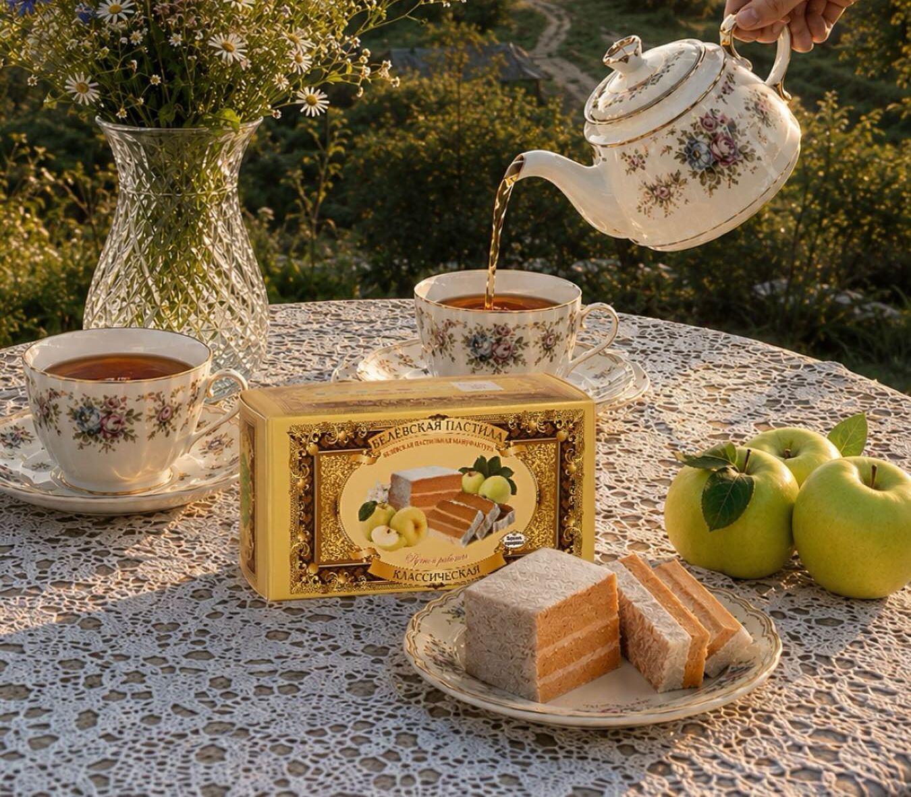
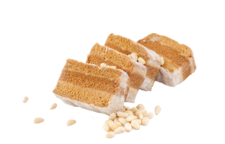
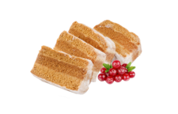
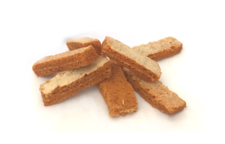
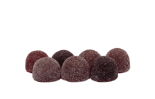
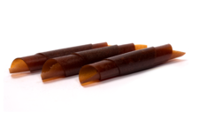
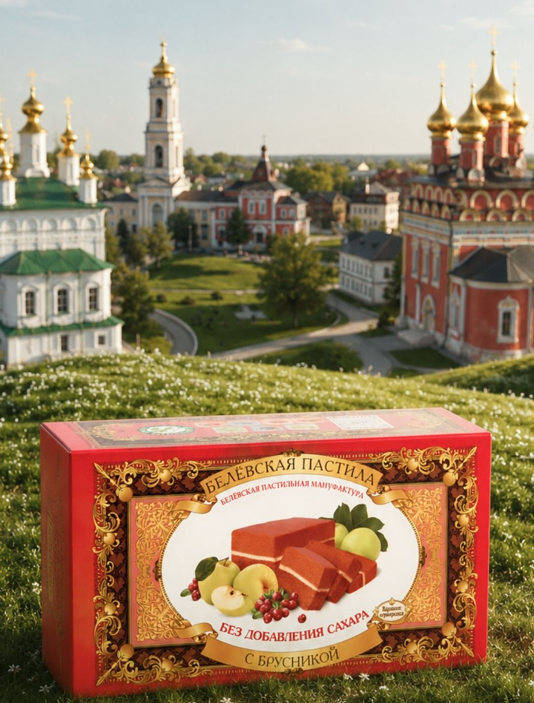

Печь построили в XIX веке и до сих пор топят дровами. В ней сушат пласты из печёной антоновки, а потом досушивают готовый «пирог» в остывающем жаре.
Выбрать пастилуКак сушат
От запекания яблок до готовой пастилы. Заварная пастила делается гораздо быстрее.
Собранный «пирог» доходит в остывающей печи, пока она не остынет.
3 кг антоновки, 100 г сахара и белок одного яйца дают 1 кг пастилы.

яблоки, сахар, яичный белок

яблоки и яичный белок

клюква, брусника, вишня, смородина

досушенные кусочки

ванильный, антоновка, кофейный

на ягодном и фруктовом соке

в стаканчике

яблоко с тыквой или облепихой
В 1881 году белёвский купец Амвросий Прохоров поставил завод «огневой сушки» фруктов. Яблоки пекли, взбивали с яйцом и мёдом и сушили в печи. Так появилась белёвская пастила. В 2010 году мануфактура вернула её в магазины по тому же рецепту.

Концепт 3 из 8. Узор изразцов нарисован для концепта.